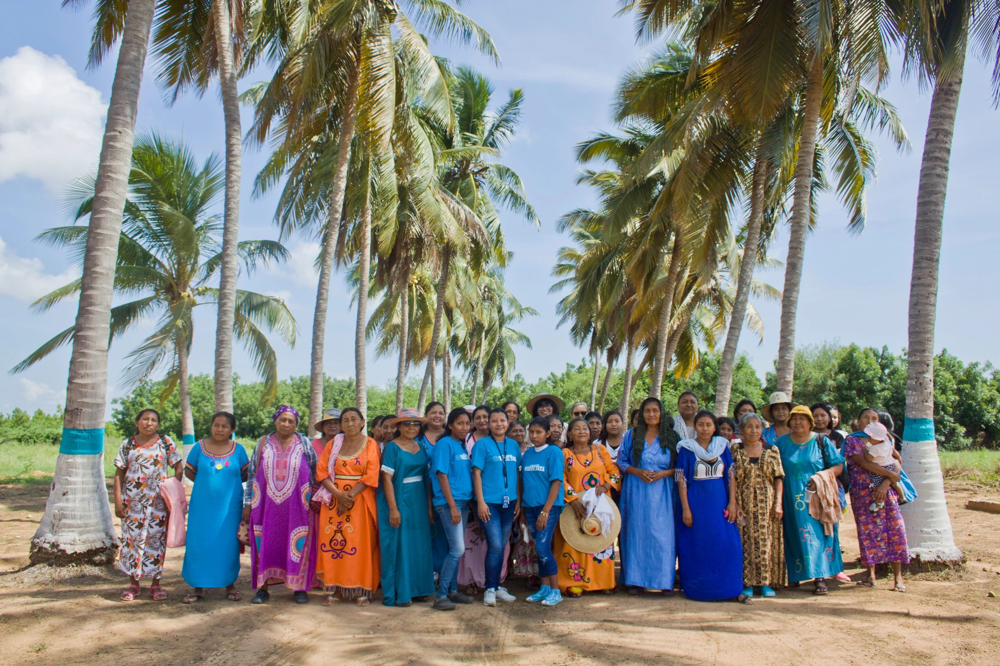
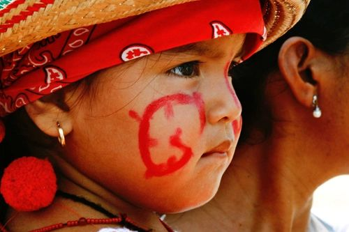

Our Team
Dedicated professionals committed to improving the lives of indigenous communities across Latin America.

Patricia Velasquez
Patricia Velasquez is a Wayuu activist, actress, and humanitarian who founded the Wayuu Taya Foundation in 2002. Born in Maracaibo, Venezuela, to a Wayuu mother and a Venezuelan father, Patricia has dedicated her life to bridging the gap between her indigenous heritage and the global community.
Named UNESCO Artist for Peace in 2003, she has leveraged her international career to bring attention to the struggles of indigenous communities in La Guajira. Under her leadership, the foundation has grown from a small initiative into a comprehensive organization serving hundreds of thousands of families.
Our Leadership
María González
Director, ProgramsOversees all five core programs, ensuring community-centered implementation and sustainable impact.
Carlos Mendez
Director, OperationsManages logistics and field operations across La Guajira, coordinating supply chains and community partnerships.
Ana Rodríguez
Director, CommunicationsLeads outreach, storytelling, and digital presence to amplify the voices of Wayuu communities worldwide.
David Torres
Director, FinanceEnsures financial transparency and accountability, maintaining the foundation's strong Charity Navigator rating.
Board of Directors
Patricia Velasquez
President & FounderRoberto Martínez
Board Vice ChairElena Castillo
Board SecretaryJames Whitfield
Board TreasurerOur Values
Community-Led
Every initiative begins and ends with the communities we serve. Their voices lead our work.
Cultural Respect
We honor and preserve the traditions, language, and identity of the Wayuu people in everything we do.
Sustainability
We design programs that build long-term capacity, not dependency — empowering people to thrive independently.
Transparency
Full financial and operational transparency. Every dollar is accounted for and every impact is reported.
Join our mission
We're always looking for passionate people to help strengthen indigenous communities. Get involved today.